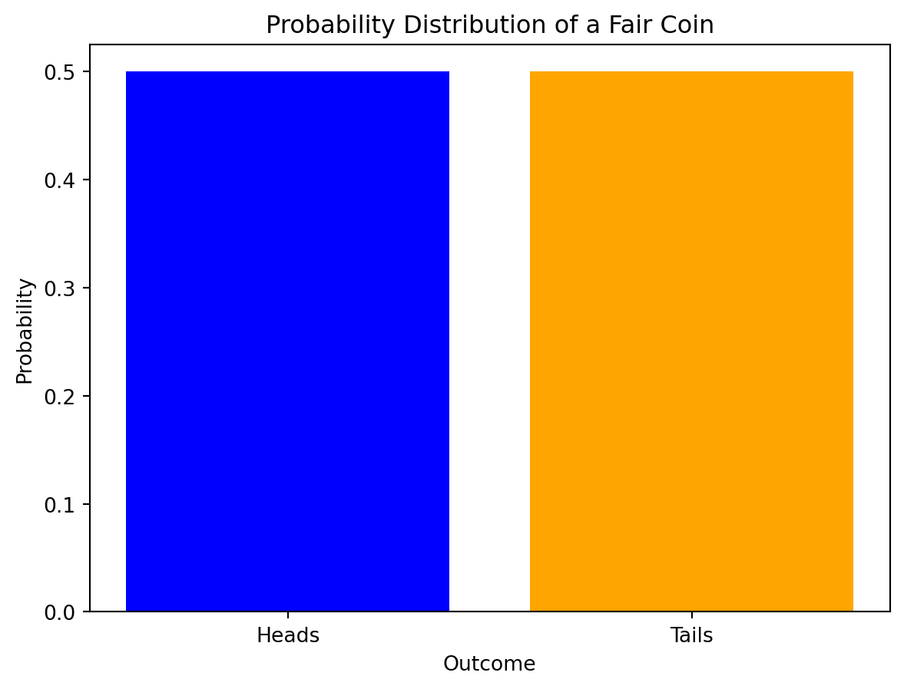
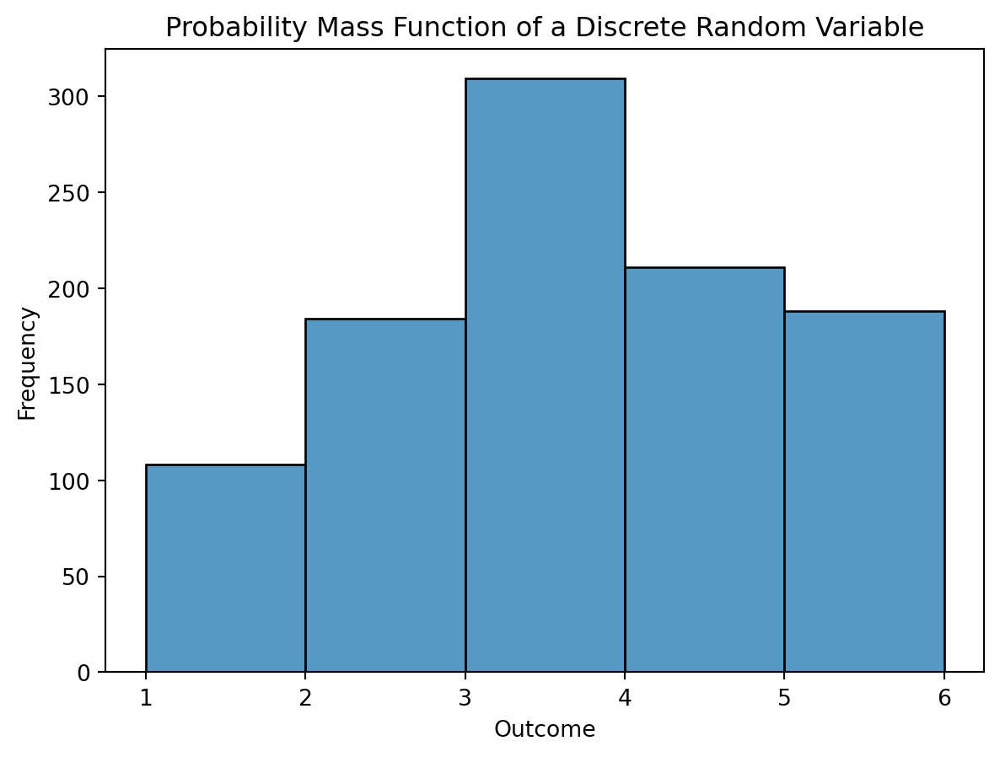
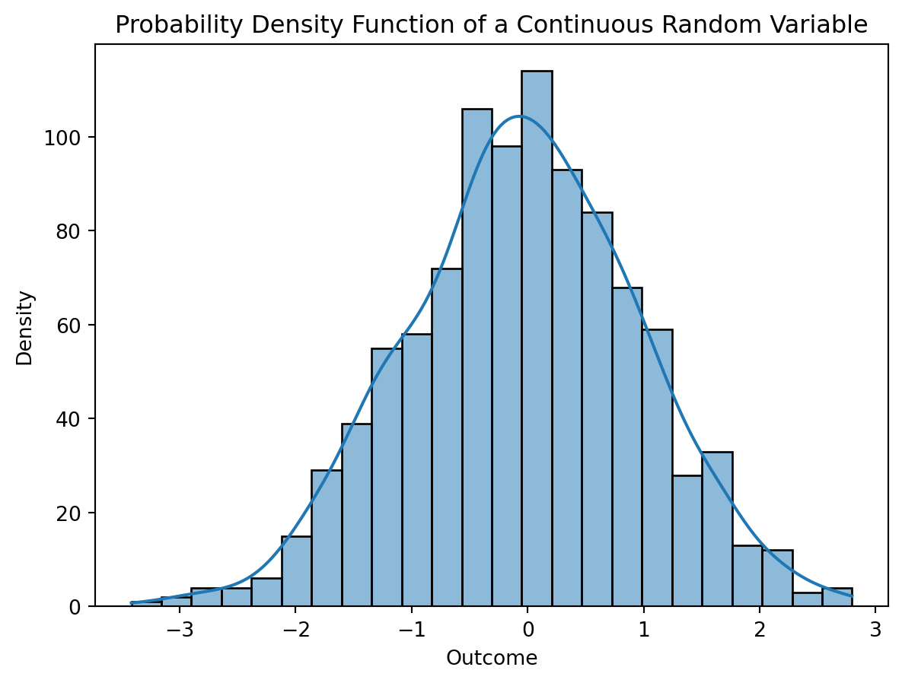
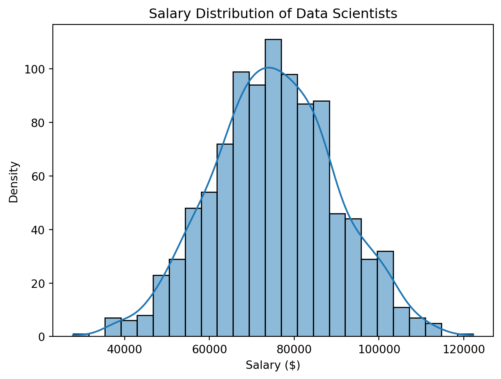
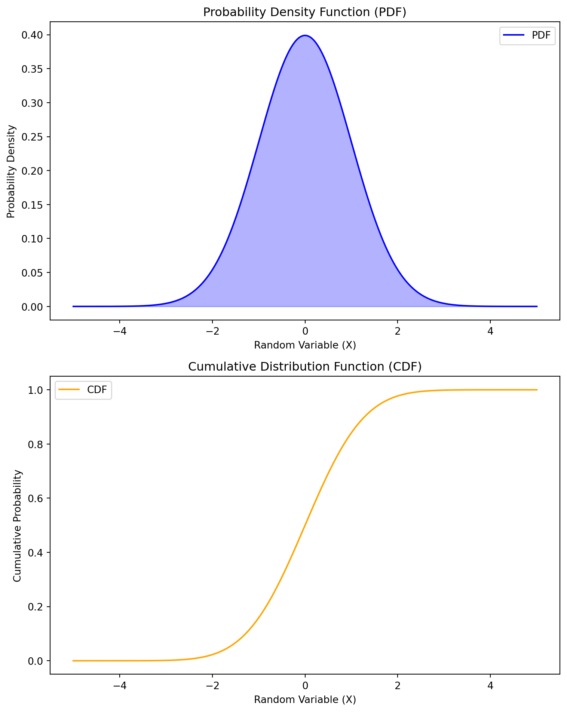
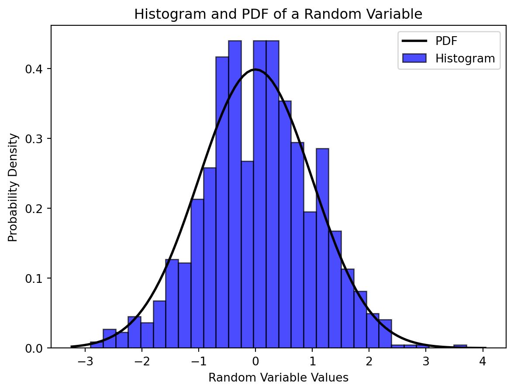

Probability Theory and Random Variables stand as pivotal concepts at the intersection of mathematics and statistics, offering a robust framework for navigating uncertainty and variability. At its core, Probability Theory provides a systematic approach to quantifying the likelihood of different outcomes in a given situation. This mathematical discipline is not confined to abstract calculations but serves as a cornerstone in statistics, underpinning methodologies that enable informed decision-making and predictive modeling.
The influence of Probability Theory and Random Variables transcends disciplinary boundaries, finding application in diverse fields such as data science, finance, and engineering. The significance of these concepts becomes particularly evident when delving into their role in modeling real-world phenomena. Random Variables introduce an essential element of unpredictability, allowing mathematical models to capture the inherent variability observed in natural and engineered systems. This comprehensive exploration seeks to unravel the foundational principles of Probability Theory, emphasizing the practical importance of Random Variables in tackling the intricacies of uncertainty across various domains. Through this exploration, a deeper understanding of probabilistic reasoning and its applicability to diverse scenarios is fostered, contributing to the toolkit of professionals in fields where uncertainty prevails.
Probability Theory: A Foundation for Uncertainty:
At its core, Probability Theory is a mathematical framework that quantifies uncertainty. It provides us with a systematic way to model and analyze random events and uncertain outcomes. The theory rests on the concept of a sample space, representing all possible outcomes of a random experiment, and events, which are subsets of the sample space.
Probability Basics: Probability is expressed as a number between 0 and 1, where 0 indicates impossibility, 1 denotes certainty, and values in between represent degrees of likelihood. The probability of an event A is denoted as P(A).
Code
import matplotlib.pyplot as pltimport numpy as np# Example: Tossing a fair coinoutcomes = ['Heads', 'Tails']probabilities = [0.5, 0.5]plt.bar(outcomes, probabilities, color=['blue', 'orange'])plt.title('Probability Distribution of a Fair Coin')plt.xlabel('Outcome')plt.ylabel('Probability')plt.show()

Probability Rules: Probability Theory is governed by fundamental rules such as the addition rule (P(A ∪ B) = P(A) + P(B) - P(A ∩ B)) and the multiplication rule (P(A ∩ B) = P(A) * P(B|A)), guiding the computation of probabilities for combined events.
Random Variables: Bridging Theory and Reality:
Random Variables provide a powerful bridge between the theoretical constructs of Probability Theory and the practical modeling of uncertain phenomena. A Random Variable is a variable whose possible values are outcomes of a random phenomenon. Let’s explore key aspects:
Discrete vs. Continuous Random Variables: Random Variables can be categorized as discrete or continuous. Discrete Random Variables take on distinct values, often integers, while continuous ones can assume any value within a specified range.
Code
import seaborn as sns# Example: Discrete Random Variabledata = np.random.choice([1, 2, 3, 4, 5], size=1000, p=[0.1, 0.2, 0.3, 0.2, 0.2])sns.histplot(data, bins=[1, 2, 3, 4, 5, 6], kde=False)plt.title('Probability Mass Function of a Discrete Random Variable')plt.xlabel('Outcome')plt.ylabel('Frequency')plt.show()

Probability Mass Functions (PMF) and Probability Density Functions (PDF): The probability distribution of a discrete Random Variable is described by its Probability Mass Function (PMF), while a continuous Random Variable is characterized by its Probability Density Function (PDF). These functions help quantify the likelihood of different outcomes.
Expectation and Variance: The expectation (mean) and variance of a Random Variable provide insights into its central tendency and degree of variability, crucial metrics for understanding the underlying probability distribution.
Code
# Example: Continuous Random Variabledata_continuous = np.random.normal(loc=0, scale=1, size=1000)sns.histplot(data_continuous, kde=True)plt.title('Probability Density Function of a Continuous Random Variable')plt.xlabel('Outcome')plt.ylabel('Density')plt.show()

Applications in Real-World Scenarios:
Probability Theory and Random Variables find extensive applications in various fields.
Finance: In finance, these concepts are instrumental in modeling asset prices, risk assessment, and portfolio optimization.
Data Science: Probability Theory underpins statistical inference and machine learning algorithms, contributing to predictive modeling and decision-making.
Code
import scipy.stats as stats# Example: Normal Distribution in Data Sciencedata_scientist_salaries = stats.norm(loc=75000, scale=15000).rvs(1000)sns.histplot(data_scientist_salaries, kde=True)plt.title('Salary Distribution of Data Scientists')plt.xlabel('Salary ($)')plt.ylabel('Density')plt.show()

Engineering: Engineers use these principles for reliability analysis, ensuring the robustness of structures and systems.
Mathematical Explanation:
Probability Theory:
1. Sample Space (Ω):
The set of all possible outcomes of a random experiment.
2. Event (E):
A subset of the sample space.
3. Probability (P):
Assigns a numerical value to each event, denoted by P(E)
Satisfies the following axioms:
Non-negativity: P(E)≥0 for any event E.
Normalization: P(Ω)=1.
Additivity: For mutually exclusive events E1,E2,…,P(E1∪E2∪…)=P(E1)+P(E2)+….
4. Probability of Complementary Event:
P(E′)=1−P(E), where E′ is the complement of event E.
5. Conditional Probability:
P(A∣B)=P(B)P(A∩B), the probability of A given B.
6. Independent Events:
Events A and B are independent if P(A∩B)=P(A)⋅P(B).
Random Variables:
1. Definition:
A function X:Ω→R that assigns a real number to each outcome in the sample space.
2. Probability Mass Function (PMF):
For discrete random variables, P(X=x) is the probability that X takes the value x. P(X=x)=P({ω∈Ω:X(ω)=x})
3. Probability Density Function (PDF):
For continuous random variables, fX(x) such that P(a≤X≤b)=∫abfX(x)dx.
4. Cumulative Distribution Function (CDF):
FX(x)=P(X≤x).
For discrete X: FX(x)=∑t≤xP(X=t).
For continuous X: FX(x)=∫−∞xfX(t)dt.
5. Expected Value (Mean):
For discrete X: E(X)=∑xx⋅P(X=x).
For continuous X: E(X)=Lim(−∞,∞)∫x⋅fX(x)dx.
6. Variance:
Var(X)=E((X−E(X))2).
Probability theory and random variables provide a rigorous framework for quantifying uncertainty and analyzing the behavior of random phenomena in diverse fields.
Another example from a contineous random variables is shown below,
Code
import numpy as npimport matplotlib.pyplot as pltfrom scipy.stats import norm# Create a continuous random variable (e.g., normal distribution)rv = norm(loc=0, scale=1)# Generate data points for the x-axisx = np.linspace(-5, 5, 1000)# Probability Density Function (PDF)pdf_values = rv.pdf(x)# Cumulative Distribution Function (CDF)cdf_values = rv.cdf(x)# Create subplotsfig, (ax1, ax2) = plt.subplots(2, 1, figsize=(8, 10))# Subplot 1: Probability Density Function (PDF)ax1.plot(x, pdf_values, label='PDF', color='blue')ax1.fill_between(x, pdf_values, alpha=0.3, color='blue')ax1.set_title('Probability Density Function (PDF)')ax1.set_xlabel('Random Variable (X)')ax1.set_ylabel('Probability Density')ax1.legend()# Subplot 2: Cumulative Distribution Function (CDF)ax2.plot(x, cdf_values, label='CDF', color='orange')ax2.set_title('Cumulative Distribution Function (CDF)')ax2.set_xlabel('Random Variable (X)')ax2.set_ylabel('Cumulative Probability')ax2.legend()plt.tight_layout()plt.show()

The provided Python code generates a graph illustrating fundamental concepts in probability theory for a continuous random variable. In this example, a normal distribution with a mean of 0 and a standard deviation of 1 is chosen. The code calculates the Probability Density Function (PDF) and Cumulative Distribution Function (CDF) values for this distribution. The generated data points along the x-axis allow visualization of how the probability density varies across different values of the random variable. The resulting graph is divided into two subplots: the first showcasing the PDF, representing the likelihood of observing specific values, and the second depicting the CDF, which reveals the cumulative probability up to each point. The graph is customized with titles, labels, and legends for clarity, providing a visual representation of the distribution’s characteristics. This code serves as an illustrative tool for comprehending the core concepts of probability theory through practical implementation and visualization.
Below given example shows the histogram illustration for the distribution of random variables,
Code
import numpy as npimport matplotlib.pyplot as pltfrom scipy.stats import norm# Create a random variable with a normal distributionmean =0std_dev =1random_variable = np.random.normal(mean, std_dev, 1000)# Plotting the histogramplt.hist(random_variable, bins=30, density=True, alpha=0.7, color='blue', edgecolor='black')# Overlaying the probability density function (PDF) for comparisonxmin, xmax = plt.xlim()x = np.linspace(xmin, xmax, 100)pdf = norm.pdf(x, mean, std_dev)plt.plot(x, pdf, 'k', linewidth=2)# Adding labels and titleplt.title('Histogram and PDF of a Random Variable')plt.xlabel('Random Variable Values')plt.ylabel('Probability Density')plt.legend(['PDF', 'Histogram'])# Display the plotplt.show()

The Python code utilizes the matplotlib library to create a complex graph that visually depicts the distribution of a random variable through a histogram. In this example, a random variable is generated based on a normal distribution using NumPy’s random module. The histogram is then constructed using the matplotlib hist function, showcasing the frequency distribution of the generated random variable. The histogram is configured with 30 bins for granularity, and the transparency (alpha) is set to enhance visualization.
To provide additional context and comparison, the code overlays the Probability Density Function (PDF) of the normal distribution onto the histogram. This allows for a visual correlation between the empirical distribution (histogram) and the theoretical probability density. The PDF is generated using the scipy.stats module, specifically the norm.pdf function. Labels, including a title and axis labels, are added to the plot to enhance interpretability. The resulting graph provides a comprehensive visualization of the distribution of the random variable, offering insights into its probability density and variability. This type of graphical representation is widely used in probability theory and statistics to analyze and communicate the characteristics of random variables.
Conclusion:
Probability Theory and Random Variables serve as the bedrock for navigating uncertainty, enabling us to make informed decisions and predictions across diverse domains. Whether unraveling the mysteries of chance or harnessing the power of statistics in practical applications, a profound understanding of these concepts is indispensable. This exploration merely scratches the surface, inviting curious minds to delve deeper into the fascinating world of probability and randomness.
Source Code
---title: "2\\. Probability Theory and Random Variables"author: "M Mubashar Ashraf"date: "2023-11-24"categories: [Probability Theory, Random Variables, ML]output: html_documentimage: "P.jpg"format: html: code-fold: truejupyter: python3code-fold: truekeep-ipynb: true---## **Introduction:**Probability Theory and Random Variables stand as pivotal concepts at the intersection of mathematics and statistics, offering a robust framework for navigating uncertainty and variability. At its core, Probability Theory provides a systematic approach to quantifying the likelihood of different outcomes in a given situation. This mathematical discipline is not confined to abstract calculations but serves as a cornerstone in statistics, underpinning methodologies that enable informed decision-making and predictive modeling.The influence of Probability Theory and Random Variables transcends disciplinary boundaries, finding application in diverse fields such as data science, finance, and engineering. The significance of these concepts becomes particularly evident when delving into their role in modeling real-world phenomena. Random Variables introduce an essential element of unpredictability, allowing mathematical models to capture the inherent variability observed in natural and engineered systems. This comprehensive exploration seeks to unravel the foundational principles of Probability Theory, emphasizing the practical importance of Random Variables in tackling the intricacies of uncertainty across various domains. Through this exploration, a deeper understanding of probabilistic reasoning and its applicability to diverse scenarios is fostered, contributing to the toolkit of professionals in fields where uncertainty prevails.### **Probability Theory: A Foundation for Uncertainty:**At its core, Probability Theory is a mathematical framework that quantifies uncertainty. It provides us with a systematic way to model and analyze random events and uncertain outcomes. The theory rests on the concept of a sample space, representing all possible outcomes of a random experiment, and events, which are subsets of the sample space.- **Probability Basics:** Probability is expressed as a number between 0 and 1, where 0 indicates impossibility, 1 denotes certainty, and values in between represent degrees of likelihood. The probability of an event A is denoted as P(A).```{python}import matplotlib.pyplot as pltimport numpy as np# Example: Tossing a fair coinoutcomes = ['Heads', 'Tails']probabilities = [0.5, 0.5]plt.bar(outcomes, probabilities, color=['blue', 'orange'])plt.title('Probability Distribution of a Fair Coin')plt.xlabel('Outcome')plt.ylabel('Probability')plt.show()```- **Probability Rules:** Probability Theory is governed by fundamental rules such as the addition rule (P(A ∪ B) = P(A) + P(B) - P(A ∩ B)) and the multiplication rule (P(A ∩ B) = P(A) \* P(B\|A)), guiding the computation of probabilities for combined events.### **Random Variables: Bridging Theory and Reality:**Random Variables provide a powerful bridge between the theoretical constructs of Probability Theory and the practical modeling of uncertain phenomena. A Random Variable is a variable whose possible values are outcomes of a random phenomenon. Let's explore key aspects:- **Discrete vs. Continuous Random Variables:** Random Variables can be categorized as discrete or continuous. Discrete Random Variables take on distinct values, often integers, while continuous ones can assume any value within a specified range.```{python}import seaborn as sns# Example: Discrete Random Variabledata = np.random.choice([1, 2, 3, 4, 5], size=1000, p=[0.1, 0.2, 0.3, 0.2, 0.2])sns.histplot(data, bins=[1, 2, 3, 4, 5, 6], kde=False)plt.title('Probability Mass Function of a Discrete Random Variable')plt.xlabel('Outcome')plt.ylabel('Frequency')plt.show()```- **Probability Mass Functions (PMF) and Probability Density Functions (PDF):** The probability distribution of a discrete Random Variable is described by its Probability Mass Function (PMF), while a continuous Random Variable is characterized by its Probability Density Function (PDF). These functions help quantify the likelihood of different outcomes.- **Expectation and Variance:** The expectation (mean) and variance of a Random Variable provide insights into its central tendency and degree of variability, crucial metrics for understanding the underlying probability distribution.```{python}# Example: Continuous Random Variabledata_continuous = np.random.normal(loc=0, scale=1, size=1000)sns.histplot(data_continuous, kde=True)plt.title('Probability Density Function of a Continuous Random Variable')plt.xlabel('Outcome')plt.ylabel('Density')plt.show()```### **Applications in Real-World Scenarios:**Probability Theory and Random Variables find extensive applications in various fields.- **Finance:** In finance, these concepts are instrumental in modeling asset prices, risk assessment, and portfolio optimization.- **Data Science:** Probability Theory underpins statistical inference and machine learning algorithms, contributing to predictive modeling and decision-making.```{python}import scipy.stats as stats# Example: Normal Distribution in Data Sciencedata_scientist_salaries = stats.norm(loc=75000, scale=15000).rvs(1000)sns.histplot(data_scientist_salaries, kde=True)plt.title('Salary Distribution of Data Scientists')plt.xlabel('Salary ($)')plt.ylabel('Density')plt.show()```- **Engineering:** Engineers use these principles for reliability analysis, ensuring the robustness of structures and systems.## Mathematical Explanation:### **Probability Theory:**#### 1. **Sample Space (Ω):**- The set of all possible outcomes of a random experiment.#### 2. **Event (E):**- A subset of the sample space.#### 3. **Probability (P):**- Assigns a numerical value to each event, denoted by P(E)- Satisfies the following axioms: - **Non-negativity:** P(E)≥0 for any event E. - **Normalization:** P(Ω)=1. - **Additivity:** For mutually exclusive events E1,E2,...,P(E1∪E2∪...)=P(E1)+P(E2)+....#### 4. **Probability of Complementary Event:**- P(E′)=1−P(E), where E′ is the complement of event E.#### 5. **Conditional Probability:**- P(A∣B)=P(B)P(A∩B), the probability of A given B.#### 6. **Independent Events:**- Events A and B are independent if P(A∩B)=P(A)⋅P(B).### **Random Variables:**#### 1. **Definition:**- A function X:Ω→R that assigns a real number to each outcome in the sample space.#### 2. **Probability Mass Function (PMF):**- For discrete random variables, P(X=x) is the probability that X takes the value x. P(X=x)=P({ω∈Ω:X(ω)=x})#### 3. **Probability Density Function (PDF):**- For continuous random variables, fX(x) such that P(a≤X≤b)=∫abfX(x)dx.#### 4. **Cumulative Distribution Function (CDF):**- FX(x)=P(X≤x).- For discrete X: FX(x)=∑t≤xP(X=t).- For continuous X: FX(x)=∫−∞xfX(t)dt.#### 5. **Expected Value (Mean):**- For discrete X: E(X)=∑xx⋅P(X=x).- For continuous X: E(X)=Lim(−∞,∞)∫x⋅fX(x)dx.#### 6. **Variance:**- Var(X)=E((X−E(X))2).Probability theory and random variables provide a rigorous framework for quantifying uncertainty and analyzing the behavior of random phenomena in diverse fields.- Another example from a contineous random variables is shown below,```{python}import numpy as npimport matplotlib.pyplot as pltfrom scipy.stats import norm# Create a continuous random variable (e.g., normal distribution)rv = norm(loc=0, scale=1)# Generate data points for the x-axisx = np.linspace(-5, 5, 1000)# Probability Density Function (PDF)pdf_values = rv.pdf(x)# Cumulative Distribution Function (CDF)cdf_values = rv.cdf(x)# Create subplotsfig, (ax1, ax2) = plt.subplots(2, 1, figsize=(8, 10))# Subplot 1: Probability Density Function (PDF)ax1.plot(x, pdf_values, label='PDF', color='blue')ax1.fill_between(x, pdf_values, alpha=0.3, color='blue')ax1.set_title('Probability Density Function (PDF)')ax1.set_xlabel('Random Variable (X)')ax1.set_ylabel('Probability Density')ax1.legend()# Subplot 2: Cumulative Distribution Function (CDF)ax2.plot(x, cdf_values, label='CDF', color='orange')ax2.set_title('Cumulative Distribution Function (CDF)')ax2.set_xlabel('Random Variable (X)')ax2.set_ylabel('Cumulative Probability')ax2.legend()plt.tight_layout()plt.show()```The provided Python code generates a graph illustrating fundamental concepts in probability theory for a continuous random variable. In this example, a normal distribution with a mean of 0 and a standard deviation of 1 is chosen. The code calculates the Probability Density Function (PDF) and Cumulative Distribution Function (CDF) values for this distribution. The generated data points along the x-axis allow visualization of how the probability density varies across different values of the random variable. The resulting graph is divided into two subplots: the first showcasing the PDF, representing the likelihood of observing specific values, and the second depicting the CDF, which reveals the cumulative probability up to each point. The graph is customized with titles, labels, and legends for clarity, providing a visual representation of the distribution's characteristics. This code serves as an illustrative tool for comprehending the core concepts of probability theory through practical implementation and visualization.- Below given example shows the histogram illustration for the distribution of random variables,```{python}import numpy as npimport matplotlib.pyplot as pltfrom scipy.stats import norm# Create a random variable with a normal distributionmean =0std_dev =1random_variable = np.random.normal(mean, std_dev, 1000)# Plotting the histogramplt.hist(random_variable, bins=30, density=True, alpha=0.7, color='blue', edgecolor='black')# Overlaying the probability density function (PDF) for comparisonxmin, xmax = plt.xlim()x = np.linspace(xmin, xmax, 100)pdf = norm.pdf(x, mean, std_dev)plt.plot(x, pdf, 'k', linewidth=2)# Adding labels and titleplt.title('Histogram and PDF of a Random Variable')plt.xlabel('Random Variable Values')plt.ylabel('Probability Density')plt.legend(['PDF', 'Histogram'])# Display the plotplt.show()```The Python code utilizes the matplotlib library to create a complex graph that visually depicts the distribution of a random variable through a histogram. In this example, a random variable is generated based on a normal distribution using NumPy's random module. The histogram is then constructed using the matplotlib **`hist`** function, showcasing the frequency distribution of the generated random variable. The histogram is configured with 30 bins for granularity, and the transparency (alpha) is set to enhance visualization.To provide additional context and comparison, the code overlays the Probability Density Function (PDF) of the normal distribution onto the histogram. This allows for a visual correlation between the empirical distribution (histogram) and the theoretical probability density. The PDF is generated using the scipy.stats module, specifically the **`norm.pdf`** function. Labels, including a title and axis labels, are added to the plot to enhance interpretability. The resulting graph provides a comprehensive visualization of the distribution of the random variable, offering insights into its probability density and variability. This type of graphical representation is widely used in probability theory and statistics to analyze and communicate the characteristics of random variables.## **Conclusion:**Probability Theory and Random Variables serve as the bedrock for navigating uncertainty, enabling us to make informed decisions and predictions across diverse domains. Whether unraveling the mysteries of chance or harnessing the power of statistics in practical applications, a profound understanding of these concepts is indispensable. This exploration merely scratches the surface, inviting curious minds to delve deeper into the fascinating world of probability and randomness.\